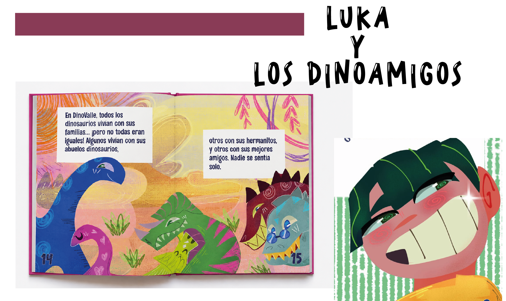
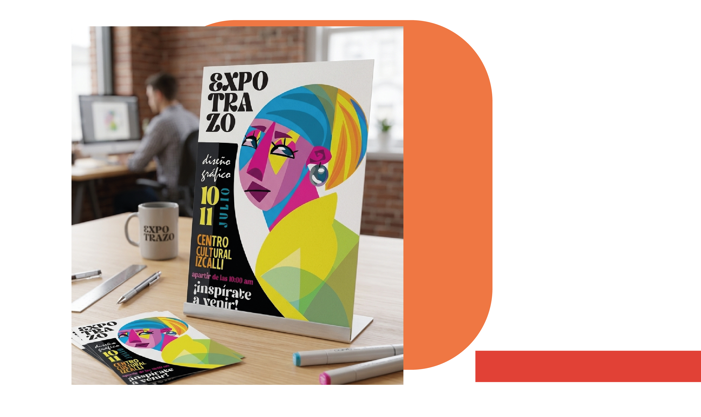
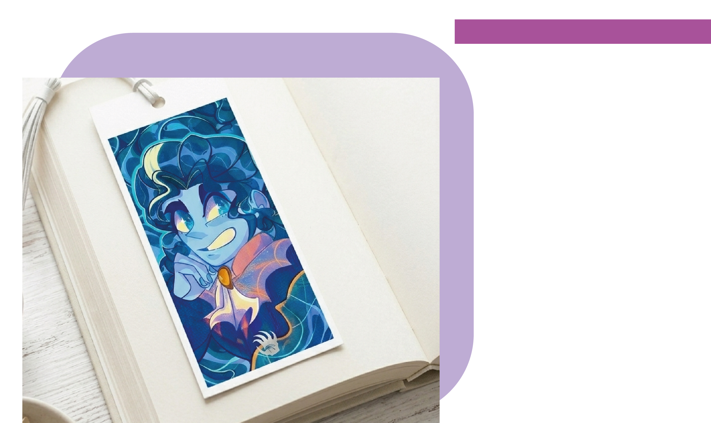
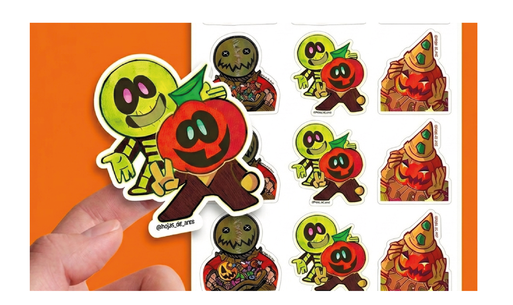
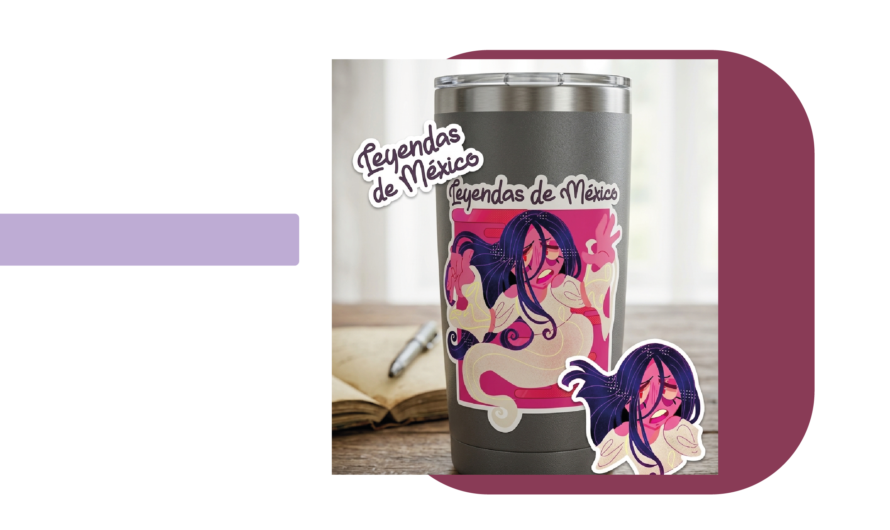

Proyectos con ilustraciones
He realizado varios trabajos basados en ilustraciones destacando la ilustración infantil para un cuento titulado:"Luka y los Dinoamigos",pOrtadas para Cuento de Alicia en el pais de as Maravillas y con diferentes estilos que se pueden utilizar para cárteles, elaboración de stickers y diversa mercancia.





